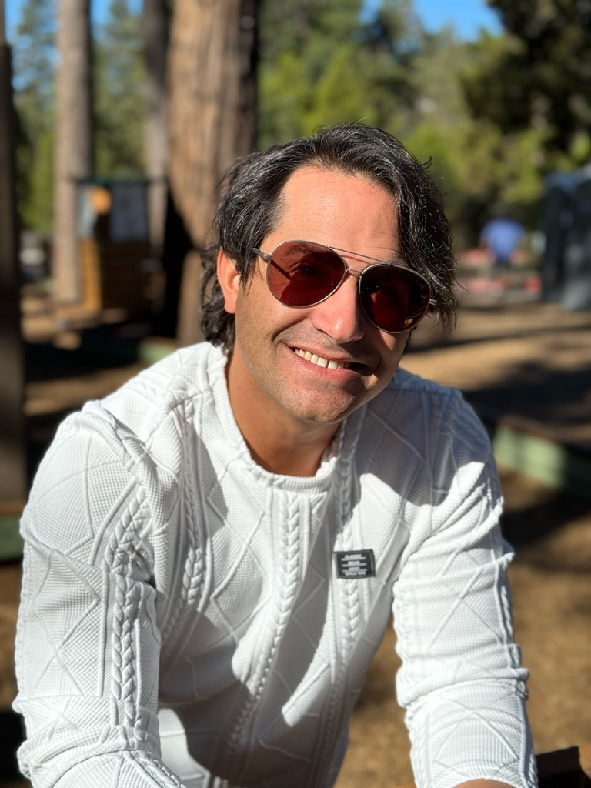

Morongo Unified School District · Area 5
Juan Carlos
Introduction
I’m not a politician. I’m a dad, a concerned parent, and a Joshua Tree neighbor.
I care deeply about the community where my children are growing up. They attend one of the MUSD schools that was put on the closure list. I saw what that threat alone did: parents pulled their kids out, enrollment slipped, and families stopped knowing whether their school would be there next fall. In Area 5, which includes Joshua Tree and Yucca Valley, our schools are the heart of the community. They deserve certainty, not a pause until the next budget.
We need someone willing to stand up for those families before the next hard decision, not after it. My commitment is clear: I will not vote to close a Morongo school, and I will push for a binding policy so no closure can reach the agenda until every alternative has been tried, measured, and published.
That’s why I’m running for the Morongo Unified School District School Board, Area 5.
The reason
Why I’m Running
Our schools should be a beacon of hope, not a budget line item. They are more than buildings. They are where our children learn, where families meet one another, and where communities are built.
Decisions about their future should not be made without the people most affected. Parents, teachers, staff, students, and communities deserve a meaningful voice — early, not after decisions are made.
School closure is an absolute last resort, and in almost every case, the wrong answer.
MUSD was built for about 10,000 students and now serves about 7,300. That gap is the root of our deficit, and I take it seriously. But the headline $7 million figure includes $3 million in one-time textbook spending. The recurring gap is closer to $4 million. Closing a school rarely saves what it promises: the district still pays for new bus routes, and the threat alone drives families out. In a rural district, a longer bus ride can decide whether a child gets to school. You cannot undo a closure.
The district’s own Enrollment Committee recommended against closing schools, and I agree. I will push for a binding board policy so that no closure can reach the agenda until every alternative has been tried, measured, and published. Do the reversible things before the irreversible thing.
Priorities
What I Stand For
-
Keep Our Schools Open
I will not vote to close a Morongo school. Calling it consolidation doesn’t change the bus ride. No closure should reach the agenda until every alternative has been tried, measured, and published.
-
Give Parents a Seat at the Table
Families felt shut out of decisions about their own schools. I want a real co-design process and a community advisory council with a real role in enrollment, budget, and program decisions, so families are heard before the vote, not after.
-
Put Students First
Every decision should begin with a simple question: What actually helps our kids? My children are in MUSD classrooms right now. I have skin in the game, and so does every other MUSD parent.
-
Listen, Learn, and Be Accountable
I manage budgets for a living, and I know to ask what the real number is when a spreadsheet promises savings, and who pays for it. For every major effort: name an owner, set a target, and report publicly. I’m independent, and I want a strong superintendent and a strong board that support and challenge each other.
What we build
A Real Vision
Closing schools is a failure of imagination, not the only path forward.
-
Make Attendance the Top Priority
State funding follows attendance. Every 1% improvement brings in about $880,000 a year, and a five-point gain, about $4.4 million, would cover the recurring gap without closing a single school. Find out why students miss school and remove those barriers one by one.
-
Real Support in Every Classroom
Too many kids are behind, and combo classes stretch teachers thin. I want more intervention teachers and aides, fewer split-grade classrooms, and early support, so a struggling child gets help before they fall further behind.
-
Put Money at the School
The superintendent earns over $300,000 a year, and the central office hasn’t shrunk as enrollment has. I want outside scrutiny of spending beyond the classroom and pay freezes for executives while the district is under stress. Look at the top before asking a family to give up their school.
-
Give Families a Reason to Choose MUSD
Homeschool and charter families live inside our boundaries. Strong schools close to home, music, art, and hands-on science, a K–8 option, competitive ACCE hybrid and independent study, and boundaries redrawn with the community so enrollment is balanced.
-
Use Our Land to Build, Not Sell
Lease, don’t sell. Staff housing so teachers can afford to live here, ACCE learning hubs and outdoor science sites in our desert, and a public list of what the district owns. Sales are one-time money. Our gap comes back every year.
-
Teach Kids to Think
Phone limits are the floor, not the answer. Teach critical thinking, media and AI literacy as basics, move early grades back toward books, paper and pencils, and give parents good information. Add the right support in every classroom so kids feel safe and want to be there.

Meet the candidate
About Juan Carlos
I’m a Joshua Tree dad. I grew up a military kid, moving every few years, and when it came time to raise a family, we chose this place on purpose. My eldest started kindergarten at Friendly Hills, and my youngest followed.
Professionally, I’m SVP of Technology at Intercare Therapy, a behavioral health organization serving kids, where I manage budgets, systems, and teams. Before that, I made documentary films and founded a nonprofit, which taught me to listen before trying to change a community. I’ve also coached my daughter’s soccer team.
I’m a parent who raised his hand.
I never planned to run for School Board. But when Friendly Hills, Palm Vista, Morongo Valley, and Landers were put on the table, I showed up to board meetings alongside parents who dove in to help fix the crisis. I saw a community that wants a seat at the table, and I’m running to bring that voice to the board.
I will fight to keep our schools open. Families deserve a real voice, full transparency, and a board that asks hard questions. Kids come first.
Join the Campaign
Help keep our neighborhood schools open. Volunteer, donate, follow along, and share the message with families across Area 5, including Joshua Tree and Yucca Valley.
@withjuancarlos · Candidate for MUSD School Board · Area 5